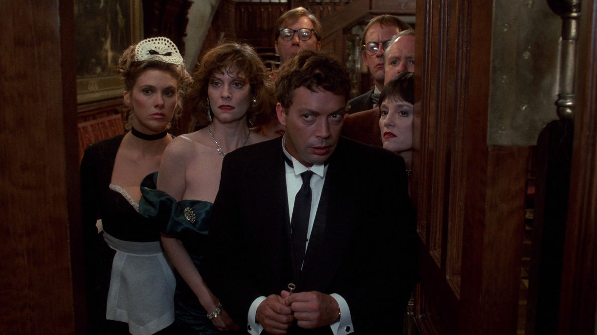

I'm sure we've all played the Parker Brothers board game, Clue at some point, and often gotten angry at the other players whenever they accused you of murder. It's considered a classic for a reason.
To see it brought to life in this comedic mystery film is a unique experience. The film does a good job setting up the characters and the premise, keeping the audience guessing until the very end. Well, only those who are into this kind of humor will appreciate it.
The movie is a fun, lighthearted popcorn flick that doesn't take itself too seriously. You can enjoy it without thinking too hard. Anyone familiar with the game will be able to point out the references, characters, and easter eggs. Which to the film's credit, they get the weapons right.
Another thing done right is the casting of Tim Curry as the butler. Anything this guy does was hilarious. In fact, Tim Curry was the only thing that kept this thing from falling apart. His comedic timing is spot on, and he brings a unique charm to the role. It's hard to keep a straight face when watching him.
But where this movie derails is its multiple endings, each with a different culprit. This was a clever way to keep the audience guessing and encourage repeat viewings, but they were too cheesy. I understand it was match the game's "ending," because it changes with each playthrough, but it just didn't feel right here.
Additionally, did anyone else have a problem with the characters, or is it just me? First of all, they lack any sort of development. They're just caricatures, and it makes it hard to connect with any of them. In short, they're idiots. Also, one big mistake the movie does is the outfits not being assocated with the colors they represent. Their names a specific color, but they don't wear that specific color. Scarlet was wearing a teal colored dress. Green wore a navy suit. Plum's colors were off. Mustard at least had a yellow tie. White wore black. And Peacock wore beige. It's a minor detail but that really bothered me.
While those complaints did often bother and detract from the experience, the movie still manages to be an entertaining watch. I did have fun, but since I'm a critic, I have to find something to complain about.